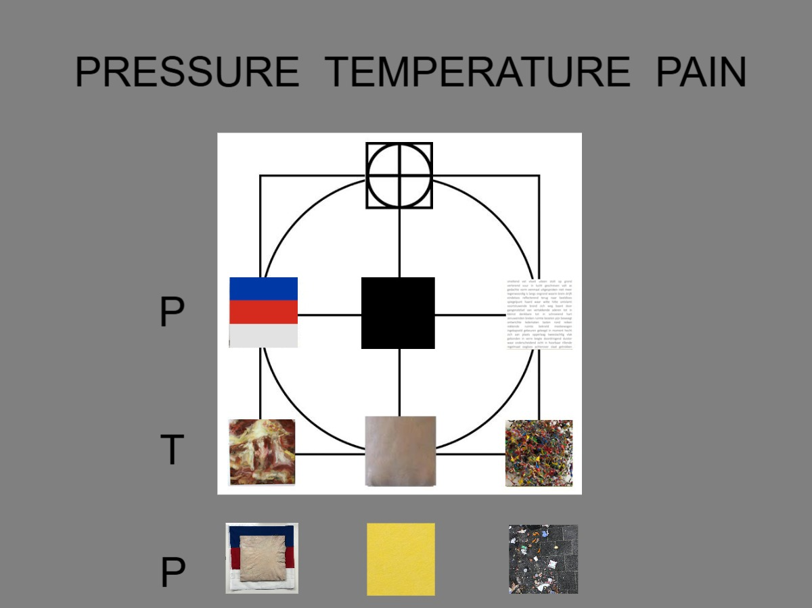

About PTP
Pressure Temperature Pain
PTP — Totaalproject
PTP is een totaalproject waarin negen series schilderijen, objecten, teksten en fotografische registraties met elkaar in verband worden gebracht. De installatie werkt als een 3 x 3 grid: geen neutrale ordening, maar een denkruimte waarin ieder werk zijn positie krijgt door de relatie tot de andere werken. Het raster maakt zichtbaar hoe de afzonderlijke series elkaar aantrekken, tegenspreken en activeren.
PTP en URE vormen samen de twee assen van het grid. PTP beschrijft de druk waaronder het lichaam en het beeld staan: Pressure, Temperature en Pain. URE beschrijft de beweging waarin vorm en betekenis ontstaan, zichtbaar worden en weer uiteenvallen: Unborn, Real en Entropy. Het werk bevindt zich telkens op het kruispunt van deze twee krachten. Iedere serie is daardoor zowel lichamelijk en psychologisch geladen als verbonden met een proces van wording, verschijning en ontbinding.
Het vertrekpunt van alle series en hun onderlinge betekenis zijn de Skin-paintings: schilderijen van menselijke huid. In het midden van het grid vormen zij het centrum en de schakel tussen binnen en buiten, tussen het individuele lichaam en de wereld, tussen psychische ervaring en fysieke werkelijkheid. De doeken zijn monochroom, opgespannen, soms licht bol of hol. Ze beelden geen lichaam af, maar zijn zelf huid: een sensitief membraan, een gevoelig oppervlak dat de wereld voelt voordat die wordt benoemd. Vanuit dit centrum ontvouwen de andere acht series zich.
Het grid als denkraam
Van boven naar beneden lopen de rijen Pressure, Temperature, Pain. Deze as vertrekt vanuit de huidzintuigen: druk, temperatuur en pijn zijn primaire lichamelijke manieren waarop de wereld zich aan ons opdringt. Maar in dit project worden die zintuiglijke categorieën ook psychologisch en politiek gelezen. Pressure is niet alleen fysieke druk op de huid, maar ook stress, macht, ideologie en maatschappelijke dwang. Temperature is niet alleen warmte of kou, maar stemming, affect, nabijheid, energie en atmosfeer. Pain is niet alleen pijn als lichamelijk signaal, maar ook trauma, verlies, historische last en confrontatie met het rauwe bestaan.
Van links naar rechts lopen de kolommen Unborn, Real, Entropy. Deze as, URE, beschrijft een beweging van ontstaan naar verschijnen en ontbinding: het ongeborene als ongrond of potentie, het werkelijke als de vorm die zichtbaar en kenbaar wordt, en entropie als het moment waarop vorm, taal, lichaam en betekenis weer uiteenvallen. URE is daarmee een model van leven: ongeboren, leven, dood. Niet als rechte tijdlijn, maar als een voortdurend proces waarin oorsprong, aanwezigheid en verdwijnen tegelijk aanwezig blijven.
De series
Vanuit deze bewegingen werken de series op elkaar in: als afgeleiden van de huid, als tegenkrachten die haar onder druk zetten, en als uitbreidingen die haar betekenisveld vergroten. Symbol en Flag onderzoeken hoe abstracte vormen, kleuren en tekens worden geladen met ideologie, macht en collectieve identiteit. Text behandelt taal als materiaal en als systeem dat de werkelijkheid structureert, maar ook kan versplinteren tot klank, herhaling en ruis. Internal richt zich op binnenhuid, vliezen, organen en kwetsbare biologische grenzen. Noise toont materie als energie, trilling en ongrond: het veld waaruit beeld en waarneming kunnen ontstaan, maar ook weer uiteen kunnen vallen. Ready Made en Outside brengen de rauwe buitenwereld binnen als tekens van bestaan, trauma, afval, toeval en vergankelijkheid.
Het PTP-totaalbeeld verbindt zo het fysieke met het psychische en het politieke. De huid is het lichamelijke beginpunt, maar ook een model voor bewustzijn: een kennend vlies dat de wereld voelt voordat die wordt benoemd. De installatie leest de mens niet als gesloten individu, maar als lichaam onder invloed: geraakt door materie, gevormd door taal, belast door geschiedenis, ingeschreven in symbolen en blootgesteld aan druk. Het project onderzoekt hoe schilderkunst een plaats kan zijn waar die krachten niet worden opgelost, maar zichtbaar naast elkaar blijven bestaan.
Hoofdstuk 1: Huidschilderijen en PTP als model
Kernwoorden: huid, huidschilderij, membraan, zintuig, druk, temperatuur, pijn, projectie, lichaam, model.
De Skin-paintings / huidschilderijen vormen het lichamelijke en conceptuele centrum van PTP. Zij komen voort uit een intense manier van kijken naar huid: naar de eigen kwetsbare pols, naar het incarnaat in oude schilderijen, naar de herinnering aan de moederhuid en naar de ongeschonden huid van het kind. Vanuit dat intieme vertrekpunt ontstaat het verlangen om huid zelf als schilderij te laten verschijnen: geen afbeelding van een lichaam, maar een oppervlak dat zich als huid gedraagt.
Het huidschilderij is een monochroom veld en tegelijk een object in de ruimte. Het doek op spieraam wordt gelezen als een lichamelijke constructie: het raamwerk als skelet, de verfhuid als omhulsel. De menselijke maat is daarbij belangrijk. Het schilderij staat tegenover de toeschouwer als een ander lichaam, frontaal en op ooghoogte. Het is geen venster op een scène, maar een gevoelig oppervlak waarop licht, materie, spanning, poriën, adering en onregelmatigheid aanwezig worden.
Daarom werkt het huidschilderij op de drempel vóór de voorstelling. Het toont geen verhaal, maar een toestand. Beeld ontstaat niet alleen in het vlak, maar in de waarneming van de kijker: in projectie, herinnering, aantrekking en ongemak. De huid is grens en raakvlak tegelijk. Zij beschermt en opent, sluit af en maakt contact mogelijk. Binnen PTP wordt dit huidoppervlak het model voor hoe de wereld het lichaam raakt voordat die aanraking volledig begrepen of benoemd wordt.
Vanuit dit centrum krijgt PTP zijn betekenis als model. Pressure, Temperature en Pain zijn in eerste instantie huidzintuigen: manieren waarop de wereld zich lichamelijk aandient. Zij beschrijven druk op het oppervlak, warmte of kou als sensatie, en pijn als signaal van lichaam en grens. Maar binnen het project worden deze drie begrippen niet alleen fysiek gelezen. Zij vormen een raster waarin lichamelijke ervaring, psychische toestand en maatschappelijke context met elkaar verbonden raken.
Pressure verwijst naar druk, spanning en compressie: naar wat op of tegen de huid duwt. Tegelijk wordt pressure sociale en politieke druk: stress, dwang, ideologie, macht en conditionering. Temperature verwijst naar warmte en kou, maar ook naar stemming, affect, nabijheid, afstand, energie en atmosfeer. Pain verwijst naar pijn als lichamelijk grenssignaal, maar ook naar verlies, trauma, historische last en datgene wat in beelden of objecten blijft doorwerken.
PTP is daardoor geen losse titel, maar een interpretatief model. Het verbindt het huidschilderij met de andere acht posities van het grid. Vanuit de huid kunnen symbolen, vlaggen, teksten, binnenlichamen, ruis, samengestelde beelden, objecten en buitenwereld gelezen worden als verschillende vormen van druk, temperatuur en pijn. Zo wordt het huidschilderij het beginpunt van een groter schilderkunstig denken: een gevoelig oppervlak waaruit het hele PTP-systeem zich ontvouwt.
Hoofdstuk 2: URE als model
Kernwoorden: Unborn, Real, Entropy, oorsprong, verschijnen, ontbinding, leven, dood, ongrond, proces, cyclische beweging.
Naast PTP vormt URE de tweede dragende as van het grid. Waar PTP de druk beschrijft waaronder lichaam, beeld en betekenis staan, beschrijft URE de beweging waarin vorm ontstaat, zichtbaar wordt en weer uiteenvalt. Het is daarmee geen apart thema naast PTP, maar een even fundamentele structuur binnen het project. Iedere serie bevindt zich op een kruispunt van deze twee assen: zij is zowel verbonden met druk, temperatuur of pijn, als met een fase van wording, verschijning of ontbinding.
Unborn verwijst naar het ongeborene: dat wat nog niet volledig vorm heeft gekregen, maar al wel als potentie aanwezig is. Het is geen leegte, maar een ongevormde ondergrond waaruit beeld, lichaam, taal of betekenis kunnen ontstaan. In het grid wordt Unborn zichtbaar in Symbol, Internal en PTP. Symbol toont de oervormen van betekenis: cirkel, vierkant, kruis, teken en structuur. Internal toont het lichaam vóór de buitenkant: vliezen, organen, binnenhuid en kwetsbare biologische grenzen. PTP op positie 7 verzamelt deze krachten opnieuw als conceptuele ongrond: een plek waar bestaande werken opnieuw kunnen worden samengebracht en waaruit nieuwe constellaties ontstaan.
Real verwijst naar het moment waarop vorm werkelijk verschijnt. Het ongeborene wordt zichtbaar als lichaam, object, vlag, huid of ding. Real is niet simpelweg de werkelijkheid buiten het werk, maar het moment waarop iets zich aandient als herkenbare aanwezigheid. In het grid verbindt Real de Flag-serie, de huidschilderijen en de Ready Mades. De vlag verschijnt als landlichaam en collectief teken; de huid verschijnt als menselijk oppervlak en gevoelig membraan; het ready made verschijnt als object dat uit de werkelijkheid zelf afkomstig is. Real is daarmee de plaats waar beeld, lichaam en wereld elkaar direct raken.
Entropy verwijst naar het uiteenvallen van vorm, taal, beeld en betekenis. Wat eerst structuur leek te hebben, verliest zijn vaste contouren en wordt ruis, fragment, afval, spoor of rest. Entropy is geen zuivere vernietiging, maar een toestand waarin betekenis losraakt, verschuift en opnieuw beschikbaar wordt. In het grid verbindt Entropy Text, Noise en Outside. Text laat taal uiteenvallen in herhaling, klank, ritme en machtsformule. Noise toont materie als trilling en ongrond, waar beeld kan oplossen in energie. Outside richt de blik op de straat, waar objecten hun functie verliezen en als resten opnieuw verschijnen.
Samen vormen Unborn, Real en Entropy geen rechte tijdlijn van geboorte naar leven en dood. Zij beschrijven eerder een cyclische beweging: iets ontstaat, verschijnt, valt uiteen en kan vanuit dat uiteenvallen opnieuw als potentie terugkeren. In die zin is Entropy niet het einde van het beeld, maar ook de voorwaarde voor een nieuw begin. Ruis, resten, fragmenten en afval kunnen opnieuw materiaal worden. Het uiteenvallen van taal kan nieuwe beeldende mogelijkheden openen. Een object dat zijn functie heeft verloren, kan binnen de installatie opnieuw betekenis krijgen.
URE maakt daardoor zichtbaar dat ieder werk binnen PTP in beweging blijft. Geen enkele positie ligt definitief vast. Een symbool kan verharden tot werkelijkheid, maar ook oplossen in ruis. Een huid kan verschijnen als oppervlak, maar tegelijk verwijzen naar een ongeboren binnenkant of naar toekomstige ontbinding. Een ready made kan een direct stuk werkelijkheid zijn, maar ook een overblijfsel, een spoor of een drager van historische pijn. Het grid ordent de werken dus niet om ze vast te zetten, maar om hun onderlinge bewegingen zichtbaar te maken.
Binnen het totaalproject beschrijft URE de levensloop van beeld en betekenis. Het werk ontstaat uit ongrond, verschijnt als vorm en keert terug naar fragment, ruis of materie. Daardoor krijgt het grid een ademende structuur: geen gesloten schema, maar een systeem waarin geboorte, aanwezigheid en verval voortdurend in elkaar overlopen. Juist in die beweging ligt de spanning van PTP: het beeld staat onder druk, maar blijft tegelijk ontstaan; het valt uiteen, maar opent daardoor steeds opnieuw ruimte voor een volgende vorm.
Hoofdstuk 3: De werken in verband / Het beeld tussen de werken
Het werkelijke beeld van PTP ontstaat niet alleen binnen de afzonderlijke schilderijen, objecten, teksten of foto's, maar juist tussen de werken in. In de installatie-opstelling wordt ieder werk een element in een groter veld. De cijfers 1 tot en met 9 verwijzen daarom niet alleen naar afzonderlijke series, maar naar plaatsen binnen het grid: posities in een denkraam waarin elk werk vanuit zijn buren, tegenpolen en diagonale verbanden kan worden gelezen. Eerst ontstaan er bewegingen door het grid: groeperingen van telkens drie reeksen, horizontaal en verticaal gelezen, tonen hoe de afzonderlijke posities inhoudelijk met elkaar verbonden zijn.
Horizontaal
Horizontaal gelezen vormt de rij Pressure, 1, 2 en 3, een veld van politieke en ideologische druk. Symbol, Flag en Text tonen hoe tekens, vlaggen, grondwetten, verklaringen en publieke taal de mens vormen. Hier wordt druk niet alleen lichamelijk opgevat, maar als maatschappelijke kracht: de druk van symbolen, nationale identiteit, juridische taal en collectieve afspraken op het denken en handelen van het individu.
De rij Temperature, 4, 5 en 6, richt zich op het lichamelijke. Internal toont het onzichtbare binnenlichaam van vliezen, organen en ingewanden; de huidschilderijen vormen het zichtbare huidlichaam waarop wij kijken en waardoor wij de wereld voelen; Noise laat dat lichaam weer opgaan in ruis, energie en materiële trilling. Temperature is hier de sfeer van het lichaam zelf: warmte, huid, binnenkant, massa en overgang.
De rij Pain, 7, 8 en 9, beweegt van symbolische betekeniswereld naar realiteit en ontbinding. PTP op positie 7 verzamelt en herordent de werken als conceptuele samenstelling; Ready Made op positie 8 brengt de directe realiteit van objecten binnen; Outside op positie 9 toont het uiteenvallen van objecten op de grond, als afval, sporen, toevallige samenstellingen en het uiteendrijven van de wereld.
Verticaal
Verticaal gelezen vormt de kolom Unborn een beweging door 1, 4 en 7: Symbol, Internal en PTP. Daarin kan de binnenhuid of het vlies van Internal worden gelezen als het bevlezen van het skelet van Symbol: een lichaam van tekens dat nog niet volledig tot werkelijkheid is geworden, maar als structuur, aanleg of oorsprong aanwezig is. De plaats van PTP in het grid, positie 7, is daarom belangrijk: hier verschijnt PTP als samenvoeging, als conceptuele serie en als veld waarin werken uit verschillende reeksen opnieuw kunnen worden gecombineerd.
De kolom Real, 2, 5 en 8, verbindt Flag, huidschilderijen en Ready Made. De vlag staat voor nationale identiteit en het land als lichaam; de huidschilderijen staan voor de persoonlijke, individuele mens; het object of de ready made staat voor het ding, de werkelijkheid en de omgeving. In deze verticale lezing wordt Real niet alleen zichtbaar als afbeelding van de werkelijkheid, maar als een reeks lichamen: landlichaam, menselijk lichaam en objectlichaam.
De kolom Entropy, 3, 6 en 9, verbindt Text, Noise en Outside. Text kan hier worden gelezen als de ruis van denken, identificatie en taal; Noise als de materiële entropie waarin vorm, beeld en energie uiteenvallen; Outside als de straat, waar objecten hun functie verliezen en als afval, sporen of toevallige conjuncties opnieuw verschijnen. Deze entropische beweging valt tegelijk samen met PTP op positie 7: samenstellingen van werken zijn niet alleen ontbinding, maar ook een nieuwe ongrond waaruit andere beelden kunnen ontstaan.
Hoofdstuk 4: De negen posities
Na deze horizontale en verticale lezing kunnen de negen posities van het grid ook afzonderlijk worden gelezen. Elke serie heeft een eigen materiaal, beeldtaal en betekenisveld, maar krijgt binnen PTP pas zijn volle lading door de plaats die zij inneemt ten opzichte van de andere reeksen.
1. Symbol
De Symbol-serie vertrekt vanuit elementaire tekens zoals vierkant, cirkel en kruis. Deze vormen worden gefragmenteerd, verschoven en opnieuw geordend, waardoor ze herkenbaar blijven maar geen vaste sleutel meer hebben. De serie onderzoekt hoe symbolen kunnen verharden tot emblemen van religie, beschaving, macht en collectieve identiteit. Symbol functioneert daardoor als een onderzoek naar de architectuur van het wereldbeeld: de oervormen waaruit betekenis, ideologie en orde kunnen ontstaan.
2. Flag
In de Flag-serie wordt de vlag teruggesneden, verzadigd, bedekt of fysiek aangetast. Het nationale symbool wordt losgemaakt van zijn wapperende functie en verandert in een frontaal, bijna abstract beeldvlak. Tegelijk blijft de politieke lading aanwezig: vlaggen tonen hoe kleur, vorm en patroon collectieve identiteit kunnen dragen. Door de vlag te bewerken wordt die ideologische druk zichtbaar, inclusief de spanning tussen individu, natie, geweld en maatschappelijke conditionering.
3. Text
De Text Works behandelen taal als materiaal, handeling en machtssysteem. Woorden worden losgeweekt uit hun vaste betekenis, herhaald, herschikt en gestapeld totdat taal tegelijk betekenis vormt en betekenis ondermijnt. Ook publieke documenten, zoals verklaringen en grondwetten, worden als materiaal ingezet. Text laat zien hoe taal de werkelijkheid structureert, maar ook hoe zij kan uiteenvallen in klank, ruis, ritme en resten van communicatie.
4. Internal
Internal richt zich op het lichaam onder de huid: organen, vliezen, vlees, hersenvlies, geboortevlies en netvlies. Deze werken kijken niet naar het lichaam als buitenvorm, maar naar de kwetsbare binnenkant waar leven, sterfelijkheid en materie elkaar raken. De verf wordt vlees; het beeld krijgt iets chirurgisch en sacraals tegelijk. Binnen het grid vormt Internal de verborgen lichamelijke laag die aan de huid voorafgaat.
5. Huidschilderijen
De huidschilderijen vormen het centrum van PTP. Het zijn monochrome huidvelden die niet een lichaam afbeelden, maar zich als huid gedragen: opgespannen, kwetsbaar, tactiel, soms bol of hol. Zij functioneren als membraan tussen binnen en buiten, als zintuiglijk oppervlak vóór voorstelling en taal. De huid is hier tegelijk lichamelijk, emotioneel, historisch en politiek geladen: een grensvlak waarop identiteit, aanraking, kwetsbaarheid, projectie en herinnering samenkomen.
6. Noise
Noise toont verf als ruis, materie en energie. De werken verbeelden een ongrond: een veld van trilling, kleur en fragmentatie waaruit beelden kunnen ontstaan, maar waarin vorm ook weer kan oplossen. Noise staat voor chaos en potentie tegelijk. Het is de achtergrondruis van waarneming, geheugen en materie; een beeld van de wereld voordat zij helder wordt, of nadat zij opnieuw uiteenvalt.
7. PTP
De PTP-positie draait niet om het enkelvoudige werk, maar om de symbolische betekenis die ontstaat wanneer verschillende werken, reeksen en beeldfragmenten met elkaar worden gecombineerd. Hier komen samenvoeging en conceptuele ordening bij elkaar: elementen uit het grid worden verschoven, aangevuld en opnieuw in verband gebracht tot tijdelijke samenstellingen, incidentele series, historische portretten, schilderijen en installaties. Zo ontstaat een symbolische betekeniswereld waarin de losse onderdelen niet alleen naast elkaar bestaan, maar elkaar activeren binnen één groter geheel. In hoofdstuk 5 wordt verder uitgewerkt hoe deze samengestelde series functioneren en hoe hun betekenis door onderlinge relaties wordt gevormd.
8. Ready Made
De Ready Mades brengen bestaande objecten de installatie binnen als directe stukken werkelijkheid. Aarde, brood, bloed, flessen of andere gevonden materialen worden niet alleen als dingen getoond, maar als beladen dragers van trauma, politiek, herinnering en lichamelijke reactie. Zij functioneren als bewijsstukken: objecten die de esthetiek onder druk zetten en de toeschouwer confronteren met de rauwe aanwezigheid van het werkelijke.
9. Outside
Outside registreert de blik omlaag: afval, resten, verpakkingen en toevallige objecten op straat, gras of stoep. De foto's tonen de publieke huid van de wereld, een grondvlak waarop druk, verlies, beweging en vergankelijkheid sporen achterlaten. Wat banaal lijkt, wordt gelezen als symptoom: een gevonden object als residu van menselijk handelen, maatschappelijke druk en stille pijn. Outside maakt de buitenwereld zichtbaar als een veld van sporen en restbetekenissen.
Hoofdstuk 5: Samenstelling
Samenstelling als symbolische betekeniswereld
Vanuit positie 7 in het grid wordt PTP zichtbaar als de plaats waar samenstelling zelf een betekenisvorm wordt. Deze positie ligt op het snijpunt van Unborn en Pain: zij verwijst tegelijk naar oorsprong, potentie en ongevormde ondergrond, maar ook naar druk, breuk, trauma en historische last. Daardoor draait PTP hier niet om één afzonderlijk werk, maar om het ontstaan van nieuwe verbanden tussen werken. De installatie is geen presentatie achteraf, maar een actieve methode om beelden te maken: series kunnen elkaar raken, kruisen, versterken of ontregelen.
In deze positie worden beeldelementen uit verschillende reeksen onderling verbonden tot nieuwe constellaties. De betekenis verschuift van het autonome werk naar het veld tussen de werken: positie, afstand, herhaling, confrontatie en combinatie worden even belangrijk als het individuele object zelf. Uit die ontmoetingen ontstaan conceptuele series en concept works: tijdelijke verbanden, historische portretten, samengestelde beelden en nieuwe associaties waarin elementen uit meerdere reeksen tegelijk werkzaam zijn.
PTP functioneert daardoor als een symbolische betekeniswereld binnen het grotere grid. Het verzamelt, herordent en activeert bestaande werken zonder ze definitief vast te zetten. De positie 7 werkt als een open plek waar beelden opnieuw kunnen ontstaan uit wat al aanwezig is: uit huidschilderij, teken, tekst, object, ruis, binnenlichaam en buitenwereld. Juist omdat deze positie aan de rand van het grid ligt, opent zij het systeem naar uitbreiding en nieuwe combinaties.
Daarmee wordt het PTP-grid ook een open systeem. De installatie kan worden uitgebreid met websites, QR-codes, geluid, video en digitale lagen die bij de fysieke opstelling horen. Een bezoeker kan via een QR-code naar aanvullende tekst, bewegend beeld of geluid gaan. Het telefoonscherm wordt dan een extra drager binnen de installatie: een extra doek, een extra muur, een extra ruimte waarin beeld, geluid, internet en tekst aan het fysieke werk worden toegevoegd.
In die uitbreiding blijft het grid het organiserende principe. PTP kan groeien als installatie, archief, boek, website en denkmodel tegelijk: een project waarin schilderkunst niet ophoudt bij het doek, maar zich uitbreidt naar ruimte, taal, scherm en geluid.